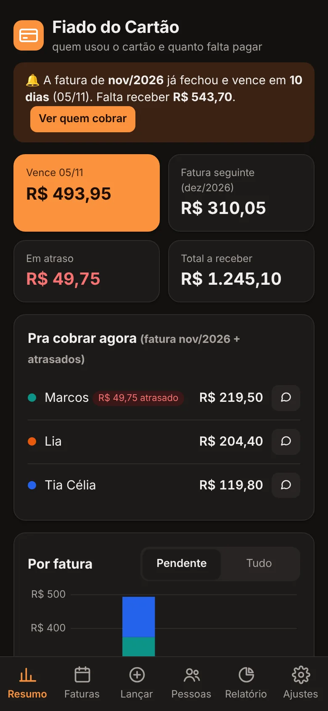
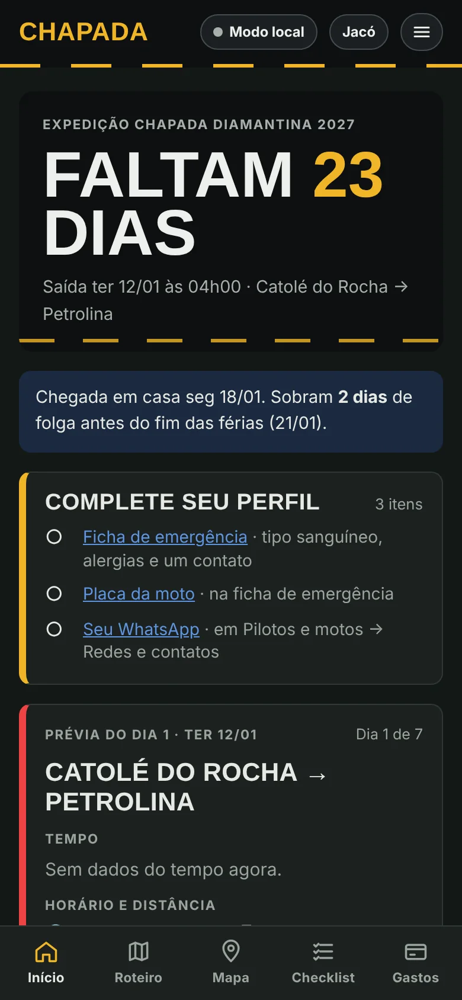

Fiado do Cartão
No arControle de quem usa o meu cartão de crédito e quanto cada um deve. Divide as parcelas, coloca cada uma na fatura certa e monta a cobrança no WhatsApp.
Portfólio · Rameson Jacó
Sou professor de Computação no IFPB e desenvolvo em Python e para a web. Gosto de pegar um problema do dia a dia, como uma planilha bagunçada, uma conversa de chat que virou controle ou um estoque anotado no papel, e transformar em um app que as pessoas usam de verdade.
Catolé do Rocha, Paraíba
class Jaco: cidade = "Catolé do Rocha - PB" formacao = "Ciência da Computação" ensina = ["Algoritmos", "Fundamentos"] stack = ["Python", "Flask", "JavaScript", "Firebase"] garagem = "BMW G 650 GS" def resolver(self, problema): # menos planilha, mais app return app_simples(problema)
Projetos
Cada projeto nasceu de uma necessidade minha ou de alguém perto de mim. Cada um tem a sua cor e a sua página.

Controle de quem usa o meu cartão de crédito e quanto cada um deve. Divide as parcelas, coloca cada uma na fatura certa e monta a cobrança no WhatsApp.

Estoque e pedidos de compra para restaurante, lanchonete, cafeteria ou açaiteria. A equipe pede os itens, os administradores aprovam, compram e conferem o que chegou. Tem login com níveis de acesso e balanço de estoque.

App para planejar e seguir uma viagem de moto até a Chapada Diamantina. Roteiro, mapa, hospedagem, checklist e gastos divididos entre os viajantes, funcionando mesmo sem sinal na estrada.
Controle financeiro pessoal em duas versões, desktop e web. Receitas, despesas, metas, gráficos, cartões com fechamento e vencimento, parcelamento e relatórios.
Mais no GitHub: Check_Voo, rastreamento de aeronaves com APIs de aviação e mapas ProjectQRcode materiais de Algoritmos em Python ver todos os repositórios
Tecnologias
Prefiro ferramentas gratuitas e leves, que deixem o app no ar sem custo para quem usa.
Sobre
Sou bacharel em Ciência da Computação e professor no IFPB, campus Catolé do Rocha, onde ensino Algoritmos com Python e Fundamentos de Computação para turmas de Informática e de outros cursos técnicos.
Antes e junto com a sala de aula, trabalhei com Customer Success, desenvolvimento de software e análise de dados. Meu próximo passo é a Engenharia de Dados e a Inteligência Artificial.
Equipe vencedora do Hackathon Sebrae em Patos, PB.
Professor no IFPB e desenvolvedor dos projetos desta página, todos em uso.
Engenharia de Dados, IA e transformar os apps que mais funcionam em produtos.
Fora do código
Tem um problema que parece pedir um app? Quer trocar ideia sobre um projeto ou sobre ensino de programação? Me chama.